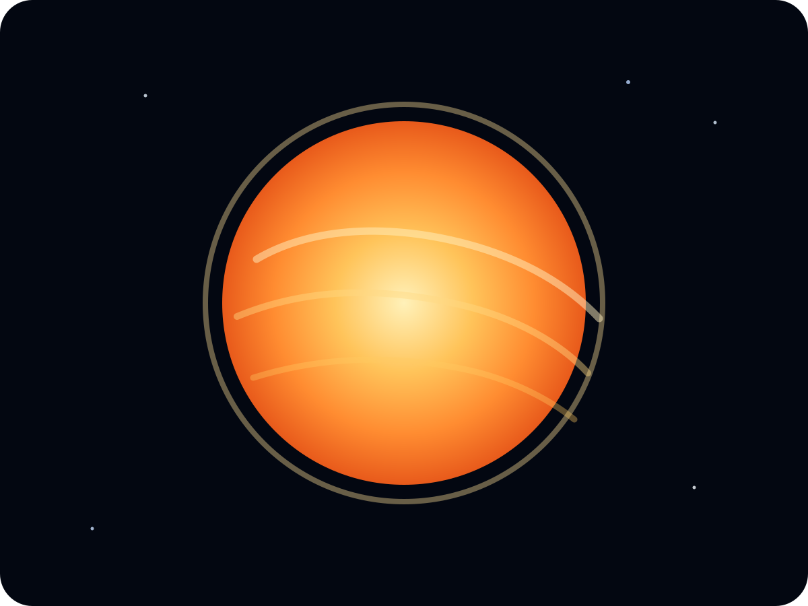
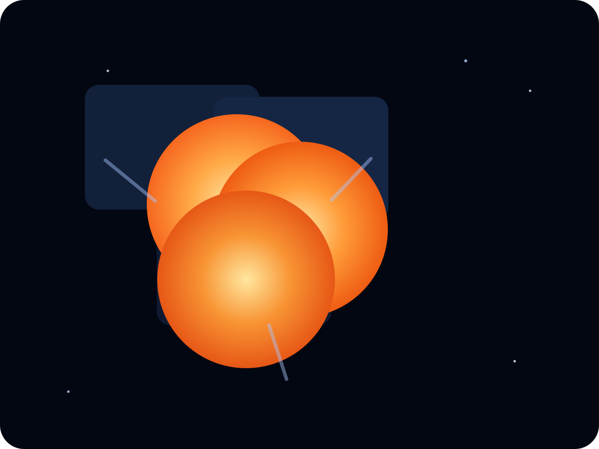

Solar and lunar mosaics
Subject-aware workflows tailored for solar surface detail, H-alpha imaging, and lunar panel capture.
Scientific imaging software
Build precise solar and lunar mosaics with a desktop workflow designed for high-resolution panel alignment, fast processing, and open-source flexibility.

Features
Subject-aware workflows tailored for solar surface detail, H-alpha imaging, and lunar panel capture.
Robust panel matching uses image features to align overlapping captures with precision.
Assemble expansive mosaics while preserving fine structures across large stitched canvases.
Optimized matching and blending paths reduce turnaround time for large panel sets.
A modern desktop GUI provides an approachable workflow for interactive review and export.
The reusable core is MIT-licensed, making automation and direct integration straightforward.
Showcase
Compare fragmented capture panels with the final mosaic output.

Architecture
CieloStitch Core
The reusable stitching core powers feature detection, matching, warping, blending, and export workflows for scientific mosaics.
Explore the core repositoryCieloStitch App
The application layers a PySide desktop experience on top of the core engine for interactive configuration, previews, and release packaging.
See the current desktop releaseDownload
Windows x64
Release v0.4.50 includes the first public desktop app build and core stitching engine.